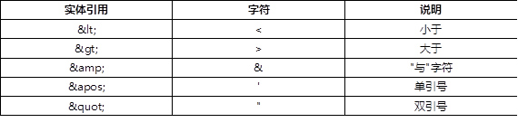
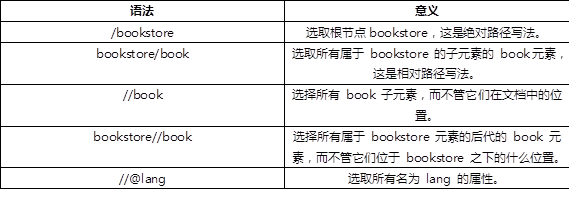
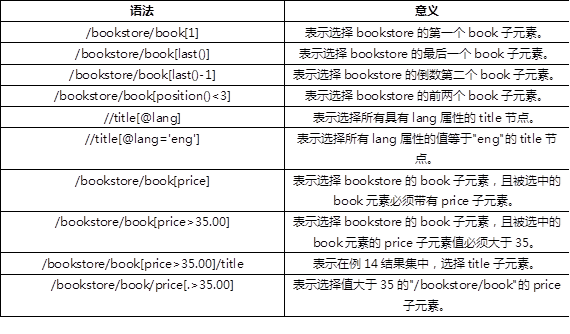

1. XML语法
1.1. XML用途
1.1.1. XML用途
XML 指可扩展标记语言（EXtensible Markup Language），是独立于软件和硬件的信息传输工具，应用于 web 开发的许多方面，常用于简化数据的存储和共享。
1.2. 基本语法
1.2.1. xml指令
处理指令，简称PI （processing instruction）。处理指令用来指挥解析引擎如何解析XML文档内容。
以下为例:
<?xml version=“1.0” encoding=“utf-8” ?>
在XML中，所有的处理指令都以<?开始，?>结束。<?后面紧跟的是处理指令的名称。例子中就是一个XML处理指令，XML处理指令要求指定一个version属性。并允许指定可选的standalone和encoding，其中standalone是指是否允许使用外部声明，可设置为yes或no。yes是指定不使用外部声明。no为使用。encoding是指作者使用的字符编码格式。有UTF-8,GBK,gb2312等等。
1.2.2. 元素和属性
XML 元素指的是从（且包括）开始标签直到（且包括）结束标签的部分。元素可包含其他元素、文本或者两者的混合物。元素也可以拥有属性。
例如:
- <datasource id="db_oracle">
- <property name="url">
- jdbc:thin@192.168.0.26:1521:tarena
- </property>
- <property name="dbUser">openlab</property>
- <property name="dbPwd">open123</property>
- </datasource>
其中datasource就是一个元素，它可以包含其他元素，例如property。同理property也是一个元素，元素除了包含元素还可以包含文本信息。元素也可以含有属性，比如property就具有name属性。
XML 元素可以在开始标签中包含属性，属性 (Attribute) 提供关于元素的额外（附加）信息。属性通常提供不属于数据组成部分的信息，但是对需要处理这个元素的应用程序来说却很重要。
XML 属性必须加引号，属性值必须被引号包围，不过单引号和双引号均可使用。
如果属性值本身包含双引号，那么有必要使用单引号包围它，或者可以使用实体引用。
- <datasource id="db_oracle">
- …
- </datasource>
1.2.3. 大小写敏感
XML对大小写是敏感的，这一点不象HTML。在XML中，标记< Letter> 和标记 < letter> 是不一样的。 因此，打开和结束标记的大小写应该写成相同的:
- <letter>…</letter>
- <Letter>…</Letter>
1.2.4. 元素必须有关闭标签
XML要求每个元素必须由起始标签和关闭标签组成。关闭标签与起始标签的名字相同，写法上多一个“/”
例如:
<Letter> 只有起始标记是不行的。
<Letter></Letter> 必须要有关闭标签
1.2.5. 必须有根元素
XML要求必须有根元素，所谓根元素就是不被其它元素包围（不含有父元素）。并且根元素只能有一个。
- <datasource id=“db_oracle”> 根元素
- <property name="url">
- jdbc:thin@192.168.0.26:1521:tarena
- </property>
- <property name="dbUser">openlab</property>
- <property name="dbPwd">open123</property>
- </datasource>
- 这里不能再定义与datasource平级的元素！
1.2.6. 元素必须正确嵌套
XML要求所有元素必须正确的嵌套。起始标记与结束标记不能在不同元素之间交叉定义。
- <datasource id=“db_oracle”>
- <property name="dbPwd"> open123
- </datasource> 这里嵌套关系出现了错误!
- </property>
1.2.7. 实体引用
实体可以是常用的短语，键盘字符，文件，数据库记录或任何包含数据的项。在XML中，有时实体内包含一些字符，如 & < >“ ‘ 等。这些均需要对其进行转义，否则会对XML解释器生成错误。
xml常用内置的实体引用如表－1所示:
表－1 XML常用实体引用
1.2.8. CDATA段
格式：< ! [ CDATA [ 文本内容 ] ] >
当在xml中某一段内容想作为普通信息看待，而其中又出现了大量的xml敏感字符时，若我们使用实体引用替换显然是件很麻烦的事情，并且还使得xml的易读性变差，这时我们可以使用CDATA段来解决。特殊标签中的实体引用都被忽略，所有内容被当成一整块文本数据对待
- <?xml version="1.0" encoding="utf-8"?>
- <root>
- <![CDATA[
- <hello>这里的内容不需要特殊转意，都会被当做文本
- <world>
- ]]>
- <subRoot> </subRoot>
- </root>
2. XML解析
2.1. XML解析方式
2.1.1. SAX解析方式
SAX（simple API for XML）是一种XML解析的替代方法。相比于DOM，SAX是一种速度更快，更有效的方法。它逐行扫描文档，一边扫描一边解析。而且相比于DOM，SAX可以在解析文档的任意时刻停止解析。 其优缺点分别为：
优点： 解析可以立即开始，速度快，没有内存压力
缺点： 不能对节点做修改
2.1.2. DOM解析方式
DOM：(Document Object Model, 即文档对象模型) 是 W3C 组织推荐的处理 XML 的一种方式。DOM解析器在解析XML文档时，会把文档中的所有元素，按照其出现的层次关系，解析成一个个Node对象(节点)。其优缺点分别为:
优点:把xml文件在内存中构造树形结构，可以遍历和修改节点
缺点： 如果文件比较大，内存有压力，解析的时间会比较长
2.2. 读取XML
2.2.1. SAXReader读取XML文档
使用SAXReader需要导入dom4j-full.jar包。其是DOM4J的一个核心API，用于读取XML文档。
DOM4J是一个Java的XML API，类似于JDOM，用来读写XML文件的。DOM4J是一个非常非常优秀的Java XML API，具有性能优异、功能强大和极端易用使用的特点，同时它也是一个开放源代码的软件。
创建SAXReader来读取XML文档。
- public static Document readXML(String filename)
- throws DocumentException{
- try {
- //创建SAXReader
- SAXReader reader = new SAXReader();
- //读取指定文件
- Document doc = reader.read(new File(filename));
- return doc;
- } catch (DocumentException e) {
- e.printStackTrace();
- throw e;
- }
- }
通过上面的代码看到，我们使用了SAXReader读取了一个指定的文件，那么调用的方法是:
Document reader(File file)
该方法会读取给定的文件，并将其封装到一个名为Document的对象中。
2.2.2. Document的getRootElement方法
Document 对象是一棵文档树的根，可为我们提供对文档数据的最初（或最顶层）的访问入口。
当我们得到Document后就相当于我们得到了XML描述的整个树结构。那么我们就来开始解析的第一步工作，获取根元素。
获取根元素前，我们还需要提一下一个名为Element的类。Element用于描述XML中的一个元素。元素可包含属性、其他元素或文本。如果元素含有文本，则在文本节点中表示该文本。
Document的方法:
Element getRootElement()
用来获取当前XML文档中的根元素。
例如:
- try {
- Document doc = readXML("build.xml");
- //获取根元素
- Element root = doc.getRootElement();
- } catch (Exception e) {
- e.printStackTrace();
- }
2.3. Element
2.3.1. element方法
当我们通过解析XML得到一个Element对象时，如何获取该对象所表示的元素的一些相关信息呢?
其中Element提供了一个方法:
Element element(String name)
该方法用于获取当前元素下指定名字的子元素。
例如:
- /**
- * 测试element方法
- */
- public static void testElement(Element element){
- //获取当前元素下名为path的子元素
- Element e = element.element("path");
- System.out.println(e);
- }
若当前元素下包含若干个同名子元素，那么element方法会获取该元素中第一个子元素。
若我们希望获取当前元素下所有同名的子元素，我们可以使用elements方法。
2.3.2. elements方法
Element提供了另一个方法用于获取当前元素下所有子元素，其方法为:
List elements()
例如:
- /**
- * 测试elements方法
- */
- public static void testElements(Element element){
- List<Element> elements = element.elements();
- for(Element e : elements){
- System.out.println(e);
- }
- }
elements还有重载方法，比如我们希望获取当前元素下同名的所有子元素时，我们可以使用:
List elements(String name)
该方法会获取当前元素下所有给定名字的子元素。
例如:
- /**
- * 测试elements方法
- */
- public static void testElements(Element element){
- //获取所有名为path的子元素
- List<Element> elements = element.elements("path");
- for(Element e : elements){
- System.out.println(e);
- }
- }
2.3.3. getName方法
Element提供了一个方法，用于获取当前元素的名字:
String getName()
例如:
- /**
- * 测试getName方法
- */
- public static void testGetName(Element element){
- String name = element.getName();
- System.out.println(name);
- }
2.3.4. getText方法
Element还提供了一个方法，用于获取元素的文本节点(其实标记与结束标记之间的文本)
String getText()
例如:
- /**
- * 测试getText方法
- */
- public static void testGetText(Element element){
- String name = element.getText();
- System.out.println(name);
- }
2.3.5. attribute方法
Element的attribute方法用于获取当前元素的属性信息，其方法定义为:
- Attribute attribute(int index)
获取当前元素的指定属性，index为索引，从0开始。
- Attribute attribute(String name)
获取当前元素的指定名字的属性。
例如:
- /**
- * 测试attribute方法
- */
- public static void testAttribute(Element element){
- //获取当前元素的第一个属性
- Attribute attr = element.attribute(0);
- //获取当前元素的name属性
- //Attribute attr = element.attribute("name");
- }
2.4. Attribute
2.4.1. getName方法和getValue方法
Attribute类的每一个实例用于描述一个元素中的某个属性信息。根据该对象我们通常会获取其对应的属性名与属性值的信息，这两个信息的获取依靠下列方法:
- String getName() : 获取属性的名字
- String getValue() : 获取属性的值
例如:
- /**
- * 测试attribute方法
- */
- public static void testAttribute(Element element){
- //获取当前元素的第一个属性
- Attribute attr = element.attribute(0);
- System.out.println(attr.getName());
- System.out.println(attr.getValue());
- }
2.5. 写XML
2.5.1. 构建Document对象
使用DOM4J我们还可以通过自行构建Document对象，并组建树状结构来描述一个XML文档，并使用DOM4J将其写入一个文件。
那么在写XML文件时，做的第一件事自然就是构建Document对象。那么我们来看看如何构建一个Document对象。
构建Docuemnt对象，我们可以使用DOM4J提供的一个类:DocumentHelper,其提供了一个静态方法:
static Document createDocument()
该方法会创建一个Docuemnt对象。
例如:
- /**
- * 创建Document对象
- */
- public static Document createDocument(){
- return DocumentHelper.createDocument();
- }
2.5.2. Document的addElement方法
当我们创建好Document后，我们就可以开始添加XML的根元素，通过前面的知识介绍我们知道，Element是用来描述XML中的一个元素的，所以我们要向Document中添加一个Element来表示根元素。
Document提供了这样的一个方法，可以方便的添加根元素：
Element addElement(String name)
该方法的作用是向Docuemnt中添加指定名字的根元素，这里需要注意的是，该方法只应当调用一次，否则会抛出文档已经存在根元素的异常。当根元素添加完毕后，该方法会将根元素所对应的Element对象返回，以便我们根据根元素来组织整个树。
- /**
- * 测试写出xml文件
- */
- public static void testWriteXml(){
- Document doc = createDocument();
- //添加根元素
- Element root = doc.addElement("project");
- }
2.5.3. Element的addElement方法
有了根元素后，我们如何向根元素中添加子元素呢？
Element类同样提供了一个方法，用于向该元素中添加子元素:
Element addElement(String name)
该方法会向当前元素中添加给定名字的子元素，并将其对应的Element对象返回。
例如：
- /**
- * 测试写出xml文件
- */
- public static void testWriteXml(){
- …
- Element root = doc.addElement("project");
- //向根元素中添加名为path的子元素
- Element ele = root.addElement("path");
- }
2.5.4. Element的addAttribute方法
除了向元素中添加子元素外，我们也经常会给当前元素添加属性。Element类提供了用于添加属性的方法:
Element addAttribute(String name,String value)
该方法会向当前元素中添加给定名字以及对应的值的属性。返回值依然为当前元素，这样做的目的在于我们连续添加元素时的代码复杂度可以减低，这个类似StringBuilder的append等方法的道理。
例如:
- /**
- * 测试写出xml文件
- */
- public static void testWriteXml(){
- …
- Element ele = root.addElement("path");
- //为path元素添加属性id,其值为cp
- ele.addAttribute("id", "cp");
- }
2.5.5. Element的addText方法
Element还提供了一个方法，可以向元素的文本节点添加文本信息。其方法定义为:
Element addText(String text)
例如:
- /**
- * 测试写出xml文件
- */
- public static void testWriteXml(){
- …
- //为path元素添加属性id,其值为cp
- ele.addAttribute("id", "cp");
- //添加文本信息
- ele.addText(“content");
- }
2.5.6. XMLWriter输出XML文档
当我们构建好Docuement后，我们可以通过XMLWriter来输出。
例如:
/**
* 测试写出xml文件
*/
- public static void testWriteXml()throw IOException{
- …
- //写出
- XMLWriter writer = new XMLWriter();//构建用于写xml的输出流
- FileOutputStream fos
- = new FileOutputStream("builder.xml");
- writer.setOutputStream(fos);
- writer.write(doc);//将Document对象输出到文件中
- writer.close();
- }
2.6. XPATH
2.6.1. 路径表达式
XPath 是一门在 XML 文档中查找信息的语言。XPath 可用来在 XML 文档中对元素和属性进行遍历。由于我们单纯使用dom定位节点时，大部分时间需要一层一层的处理，如果有了xPath，我们定位我们的节点将变得很轻松。他可以根据路径，属性，甚至是条件进行节点的检索。
- XPath 使用路径表达式在 XML 文档中进行导航
- XPath 包含一个标准函数库
- XPath 是 XSLT 中的主要元素
- XPath 是一个 W3C 标准
路径表达式语法:
- 斜杠（/）作为路径内部的分割符。
- 同一个节点有绝对路径和相对路径两种写法:
- 路径（absolute path）必须用"/"起首，后面紧跟根节点，比如/step/step/...。
- 相对路径（relative path）则是除了绝对路径以外的其他写法，比如 step/step， 也就是不使用"/"起首。
- "."表示当前节点。
- ".."表示当前节点的父节点
- nodename（节点名称）：表示选择该节点的所有子节点
- "/"：表示选择根节点
- "//"：表示选择任意位置的某个节点
- "@"： 表示选择某个属性
我们以下面的xml来举例说明:
- <?xml version="1.0" encoding="ISO-8859-1"?>
- <bookstore>
- <book> <title lang="eng">Harry Potter</title> <price>29.99</price> </book>
- <book> <title lang="eng">Learning XML</title> <price>39.95</price> </book>
- </bookstore>
常用的表达式如表－2所示：
表－2 常用路径表达式
2.6.2. 谓语
所谓"谓语条件"，就是对路径表达式的附加条件。所有的条件，都写在方括号"[]"中，表示对节点进行进一步的筛选。 常用谓语如表－3所示：
表－3 常用谓语
2.6.3. 通配符
通配符的使用如下:
- "*"表示匹配任何元素节点。
- "@*"表示匹配任何属性值。
- node()表示匹配任何类型的节点。
常用通配符用法如表－4所示：
表－4 通配符

2.6.4. Dom4J对XPath的支持
DOM4J支持使用XPATH来检索XML内容。若想使用需要引入一个jar包到项目中，该jar包名字应为: jaxen-xx-xx.jar。版本不同，可能名字略有差别。
若不引用此包，程序会引发:
java.lang.NoClassDefFoundError:org/jaxen/jaxenException异常。
Document提供了一个对XPATH检索的方法:
- List selectNodes(Stirng xpath)
传入xpath路径，获取相应的信息 .